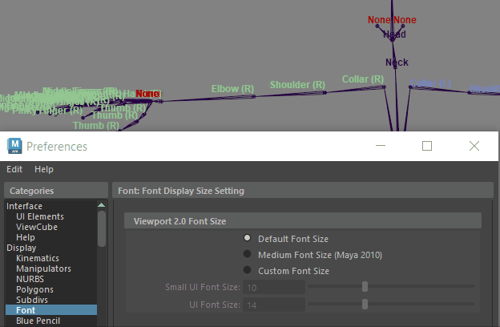

切换关节标签的可见性
显示骨架关节
启用关节标签
可以通过多种方法在场景视图中显示或隐藏关节标签：
选定骨架后，使用
“显示 > 动画 > 关节标签”
(Display > Animation > Joint Labels)或“骨架 >
关节标签设置
>
切换选定标签”
(Skeleton > Joint Labelling > Toggle Selected Labels)，切换选定关节在场景视图中的关节标签可见性。
在
“动画”(Animation)菜单集
(F4) 中，单击“
骨架
>
关节标签设置
>
显示所有标签
”(Skeleton > Joint Labelling > Show All Labels)和“
骨架 > 关节标签设置
>
隐藏所有标签
”(Skeleton > Joint Labelling > Hide All Labels)，以在场景视图中显示或隐藏所有关节标签。
在
“属性编辑器”(Attribute Editor)
中设置单个关节标签的可见性。若要切换单个关节标签在场景视图中的显示，请选择该关节，打开
“属性编辑器”(Attribute Editor)
，然后启用或禁用
“关节标签设置”(Joint Labelling)
部分中的
“绘制标签”(Draw Label)
。
提示：
如果关节标签太小，请使用
“首选项”(Preferences)窗口的“字体”(Font)部分
（
“首选项
>
字体
>
Viewport 2.0 字体大小
>
自定义字体大小
>
UI 字体大小”
(Preferences > Font > Viewport 2.0 Font Size > Custom Font Size > UI Font Size)）中的选项调整关节标签文本大小。

使用“首选项 > 自定义字体大小”(Preferences > Custom Font Size)可显示较大的关节标签
父主题：
使用关节标签